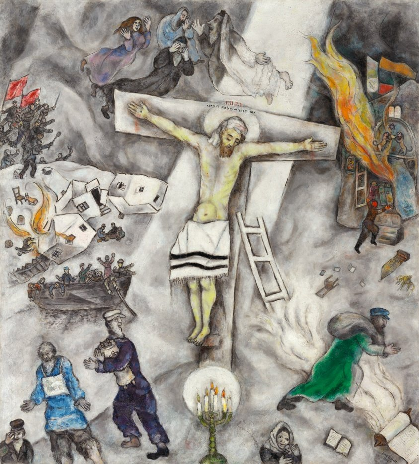

White Crucifixion
Marc Chagall · 1938 · Oil on canvas · 154.6 × 140 cm · Art Institute of Chicago
In copyright. Look and learn: shown for study, not for download.
Chagall painted this in 1938 while living in Paris, in response to Kristallnacht. He later overpainted two details: a swastika on the armband of the soldier burning the synagogue, and the words Ich bin Jude on a placard around a man's neck. It was first shown at the Galerie Mai in Paris in 1940 under the title Le Christ. He gave it to his daughter Ida in 1944, and it was sold to the Art Institute of Chicago on 27 December 1946.